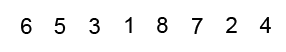
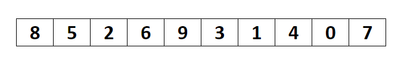
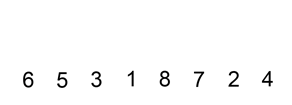

Aici voi prezenta niste algoritmi de sortare importanti. Totodata, aceasta pagina este
ca o notita pentru mine. Principalii algoritmi de sortare sunt:
Sortarea prin metoda bulelor se consideră drept una din cele mai puţin efective metode de sortare, dar cu un algoritm mai simplu. Ideea de bază a sortării prin metoda bulelor este în a parcurge tabloul, de la stânga spre dreapta, fiind comparate elementele alăturate a[i] si a[i+1]. Dacă vor fi găsite 2 elemente neordonate, valorile lor vor fi interschimbate. Parcurgerea tabloului de la stânga spre dreapta se va repeta atât timp cât vor fi întâlnite elemente neordonate.
Complexitate:

void bubble(int a[],int n)
{
int schimbat = 0;
do{
schimbat = 0;
for(int i = 0; i < n-1; i++)
{
if (a[i] > a[i+1])
swap(a[i], a[i+1]);
}
}while(schimbat);
}
void bubble_var(int a[], int n)
{
for(int i=0; i<n; i++)
for(int j=0; j<n-i-1; j++)
if (a[j] > a[j+1])
swap(a[j], a[j+1]);
}
Acest algoritm selectează, la fiecare pas i, cel mai mic element din vectorul nesortat(de la poziţia i până la n). Valoarea minimă găsită la pasul i este pusă în vector la poziţia i,facându-se intereschimbarea cu poziţia actuală a minimului.Nu este un algoritm indicat pentru vectorii mari, în majoritatea cazurilor oferind rezultate mai slabe decât insertion sort şi bubble sort.
Complexitate:

void selection(int a[], int n)
{
for(int i = 0; i < n - 1;i++)
{
int minPoz = i, min = a[i];
for(int j = i+1; j<n; j++)
{
if(min > a[j])
{
minPoz = j;
min = a[j];
}
}
swap(a[i], a[minPoz]);
}
}
void selection_var(int a[], int n)
{
for(int i=0; i<n; i++)
for(int j=i+1; j < n; j++)
if(a[i] > a[j])
swap(a[i], a[j]);
}
Spre deosebire de alţi algoritmi de sortare, sortarea prin inserţie este folosită destul de des pentru sortarea tablourilor cu număr mic de elemente. De exemplu, poate fi folosit pentru a îmbunătăţi rutina de sortare rapidă. Sortarea prin inserţie seamană oarecum cu sortarea prin selecţie. Tabloul este împărţit imaginar în două părţi - o parte sortată şi o parte nesortată. La început, partea sortată conţine primul element al tabloului şi partea nesortată conţine restul tabloului. La fiecare pas, algoritmul ia primul element din partea nesortată şi il inserează în locul potrivit al părţii sortate. Când partea nesortată nu mai are nici un element, algoritmul se opreste.
Complexitate:

void insertionSort(int a[], int n)
{
for(int i = 1; i < n; i++)
{
int j = i;
while (j > 0 && a[j - 1] > a[j])
{
swap(a[j], a[j-1]);
j--;
}
}
}